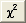

Verwenden Sie die Registerkarte Nachrichten, um die Anpassungsvorgänge und -ergebnisse zu überwachen. Sie können zum Beispiel sehen, ob der Fit konvergiert hat oder nicht, wie viele Iterationen durchgeführt wurden und was der aktuelle Chi-Quadrat-Wert ist.
Diese Informationen sind möglicherweise sehr nützlich. Wenn Sie denken, dass der Wert für das berichtete Chi-Quadrat zu groß ist (Sie können das reduzierte Chi-Quadrat sehen, indem Sie auf die Schaltfläche Chi-Quadrat berechnen  klicken), können Sie die Initialisierungsparameterwerte anpassen und die Anpassung erneut durchführen.